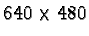
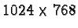
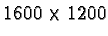
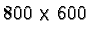

This section describes how to optimize the hardware and software configuration of your computer to optimize the performance of the GIMP.
The GIMP executable is about 7 Mb; however, depending on the size of the GIMP data directories (patterns, palettes, brushes, and so on), the memory footprint can grow another 2-10 Mb. In addition, the script-fu program that runs concurrently with the GIMP occupies about 2.5 Mb. Thus, the GIMP requires a minimum of about 11.5-19.5 Mb of RAM.
This is not all, though, because every image loaded into the GIMP also requires memory. For example, loading an RGB format image will require at least three times the number of pixels in the image (one byte per RGB channel and perhaps a byte for the alpha channel) per layer. Thus, an image with dimensions  pixels containing three equal-sized layers requires from 2.8 to 3.7 Mb of memory.
In addition to the memory required to display the image, there is also the memory required for the undo cache. This is what allows the GIMP to undo operations to an image being worked on.
The conclusion is that to work comfortably in the GIMP--to be able to open images, composite, touchup, and apply filters--32 Mb of memory should be considered a minimum. Of course, the RAM required will be proportionally more for large images containing multiple layers.
The ability to display large images on a video monitor depends on the amount of video RAM available on the video card. For example, if the display resolution is  with only 8 bits (1 byte) of color per pixel, the minimum required amount of video RAM is 0.79 Mb. However, working with only 8 bits per pixel is paltry, because it only allows for 256 simultaneous colors on the screen at one time.
Increasing the color depth to 16 bits (2 bytes) at a resolution of doubles the required video RAM to 1.57 Mb. This is really the minimum video RAM required to get reasonable performance from the GIMP, and a higher-performance system might have a resolution of  with 24 bits (3 bytes) of color per pixel, requiring at least 5.76 Mb of video RAM.
The GIMP uses memory as specified by the Toolbox:File/Preferences
dialog. Figure 4
For example, with 128 Mb of RAM and with the GIMP running as the primary application, perhaps a reasonable size for the cache is 50 to 75 Mb. This number can be tuned to the user's needs. A useful tool for determining how much memory is required by your applications is the Linux/Unix command, top. This command dynamically shows many of the characteristics of running processes on your machine. In particular, the column %MEM gives the percentage memory used by each process. Typing S-m (i.e., an uppercase M) makes top display the processes sorted by memory use. The following is a truncated output from top on my Linux machine after sorting by memory use:
11:51am up 2:31, 2 users, load average: 0.00, 0.02, 0.05 63 processes: 62 sleeping, 1 running, 0 zombie, 0 stopped CPU states: 1.3% user, 0.9% system, 0.0% nice, 97.6% idle Mem: 128012K av, 124096K used, 3916K free, 31492K shrd, 21908K buff Swap: 136040K av, 2612K used, 133428K free 47028K cached PID USER PRI NI SIZE RSS SHARE STAT LIB %CPU %MEM TIME COMMAND 6253 cbunks 0 0 14888 14M 2908 S 0 0.0 11.6 0:01 gimp 653 root 14 0 14324 13M 1304 S 0 1.1 11.1 4:50 X 679 cbunks 0 0 13172 12M 4024 S 0 0.0 10.2 0:17 netscape 663 cbunks 3 0 5236 5236 2088 S 0 0.0 4.0 0:05 emacs 6234 cbunks 0 0 5072 5072 1784 S 0 0.0 3.9 0:00 knews 6269 cbunks 0 0 3252 3252 1964 S 0 0.0 2.5 0:00 xfig 6254 cbunks 0 0 2360 2360 928 S 0 0.0 1.8 0:00 script-fu 555 xfs 0 0 2280 2280 244 S 0 0.0 1.7 0:00 xfs 673 cbunks 0 0 1532 1532 976 S 0 0.0 1.1 6:14 Xquote 607 news 0 0 1216 1216 76 S 0 0.0 0.9 0:00 innd 662 cbunks 3 0 1088 1088 676 S 0 0.3 0.8 0:00 xterm 6287 cbunks 16 0 1056 1056 848 R 0 0.7 0.8 0:01 topAs can be seen from the display, there is 128 Mb of RAM, of which GIMP is occupying 11.6%. In conjunction with the other processes, including X, Netscape, and Emacs, about 50% of the RAM is being used. The remaining 50% equals 64 Mb of RAM. Thus, for my machine, it might be reasonable to set the GIMP cache to 50 Mb. Of course, your mileage will vary.
The Text tool in the GIMP requires fonts served up by the X Window System. Unfortunately, not every X Window System is delivered with all the cool fonts you'll want to have. It is possible, though, to download a nice set of fonts from the Internet and to install them on your system. This section describes how to do that. Note that although the advice given here will work on many Linux and UNIX systems, it is not guaranteed to work on all of them. The goal of this section is to be helpful, but due to the variability of different systems, it would be impossible to cover all cases.
There are two widely used font collections for computers running the X Window System. These collections are called freefonts and sharefonts. They can be found at many places around the web, but two places you might try are:
ftp://ftp.gimp.org/pub/gimp/fonts/ ftp://metalab.unc.edu/pub/linux/X11/fonts/The files to download will be named something like freefonts-0.10.tar.gz and sharefonts-0.10.tar.gz. The names may change to reflect updated version numbers.
Once downloaded, they must be installed in a font directory. For RedHat Linux systems, fonts are typically installed in /usr/X11R6/lib/X11/fonts/. However, this may be different for other systems running the X Window System. It is not necessary to install the fonts in the system directory. They can be installed anywhere that is convenient--even in the user's home directory. This last option may be necessary for a user who wants to use great fonts but doesn't have root privilege.
The following instructions assume that the installation is being made to the user's directory called ~/FONTS. After downloading the two font packages and moving them to this directory, the instructions for installing the freefonts package are as follows:
% cd ~/FONTS % gzip -dc freefonts-0.10.tar.gz | tar xvf -This uncompresses and unpacks the font collection archive. This is followed by the commands that tell the X Window System where the new fonts live:
% xset fp+ ~/FONTS/freefont % xset fp rehashFollow the same instructions to install the sharefonts package and that's all there is to it! The freefonts package contains 79 fonts and the sharefonts package 22. The next time the GIMP is run, these new fonts will be available to the Text tool.
If these fonts were not pre-installed in the usual system directory, you'll need to tell the X Window System where to find them each time you start up a new X session. This can be automated by putting the last two commands above in your .xinitrc file.
Using the GIMP is greatly enhanced by having a display with sufficient color depth to display subtle color variations. A display with only 8 bits per pixel (bpp) can represent only 256 colors simultaneously, which is insufficient for many photographs. The result, as explained in Section 9.5.1, is a type of color distortion called dithering. If your video adapter has sufficient RAM, it is possible to display at 16 or 24 bits per pixel, which will greatly enhance your viewing pleasure and your ability to work effectively with color. For example, to run at 16 bits per pixel at a screen resolution, you'll need about 1.6 Mb of video RAM. However, at a resolution of , you'll need less than 1 Mb. Whether it is reasonable to use the lower resolution to get better color depth is up to the individual user to decide.
The X Window System on Linux machines typically defaults to only 8 bpp. If you are using XFree86, the following command can be used to run a higher color depth (for other X Window Systems, consult your man pages):
% startx -- -bpp 16This command will run X at 16 bpp only if there is an appropriate section in the XF86Config file. For Redhat Linux systems, this file is typically found in the directory /etc or /etc/X11. More details on how to configure the X Window System using XF86Config can be found in the XF86Config man page.